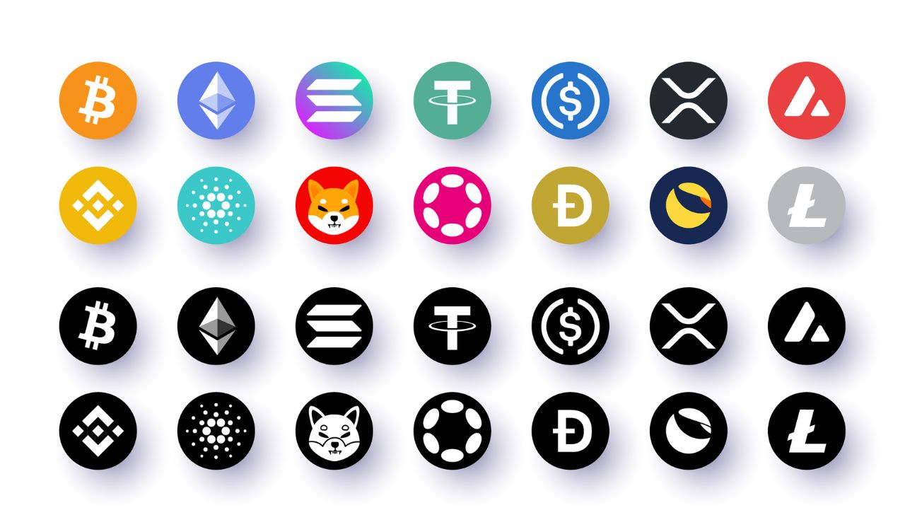

Actualités Crypto monnaie
es crypto monnaie se font une place dans le trading mais aussi dans le cœur des investisseurs. Découvrez dans cette section du Cafedelabourse tous nos conseils pour investir et trader les crypto devises telles que le Bitcoin, Ethereum, Litecoin, Ripple ou Dash et nos décryptages de l’évolutions des Fintech afin de vous aider à investir sur les monnaies virtuelles et à utiliser tout le potentiel les nouveaux acteurs de la finance.

Nos articles les plus populaires

Bitcoin et monnaie virtuelle : comment investir dans les cryptos ?
Crypto monnaie : 8 monnaies virtuelles à suivre en 2023
Qu’est-ce que le Bitcoin ? Comment investir dans la monnaie virtuelle ?
7 nouvelles crypto monnaies prometteuses en 2023